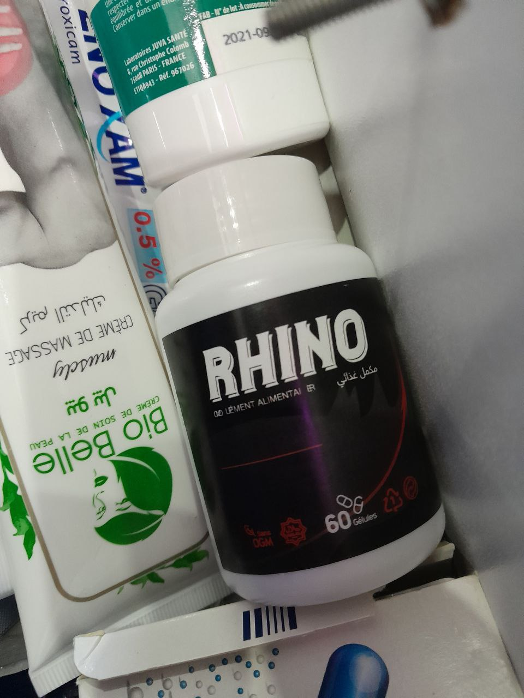
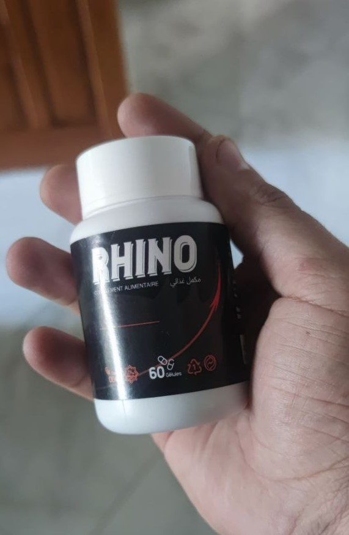

Se débarrasser des problèmes de faiblesse sexuelle est facile et simple.
Uvatov Oleg Valerievich Sa mission en tant que médecin généraliste est de fournir des soins de santé primaires. Cette spécialité médicale comprend la pratique de la médecine dans plusieurs domaines, notamment les maladies cardiaques, le système digestif, les maladies rhumatismales, les maladies masculines et les voies urinaires.
"Rappelez-vous toujours la vérité et n'écoutez personne: la faiblesse sexuelle peut être surmontée à tout moment."
Nous avons demandé au Dr. Oleg, qui est un médecin en sciences médicales, de nous en dire plus sur les problèmes de faiblesse sexuelle et comment les résoudre et s'en débarrasser facilement.
Le sujet que nous avons aujourd'hui est tout à fait masculin - la faiblesse sexuelle. malgré cela, je veux que toutes les femmes lisent cet article. Les hommes souvent ne font pas une consultation dès le début du problème, mais supportent et essaient de se débarrasser des problèmes de faiblesse sexuelle avec quelques remèdes populaires. la femme peut éclairer le chemin de l'homme et le guider sur la bonne voie.
Donc, notre sujet aujourd'hui est sur l'impuissance. Comment se protéger de ce problème ? c'est possible? Comment se débarrasser de la dysfonction érectile ?
Irina : "Bonjour, Docteur Oleg. Dites-moi, est-ce vrai que l'impuissance est un compagnon « obligatoire » à l'âge mûr d'un homme ?"
Docteur Oleg : "Bonjour Irina ! Bien sûr, ce n'est pas vrai. l'impuissance est étonnamment réversible à tout âge. Pas un miracle, mais la science ordinaire."
De plus, si vous connaissez le secret et appliquez un peu de discipline, il est possible de récupérer même à la maison et très rapidement, ce que font des milliers de mes patients."
Irina : "Et quel est ce secret?"
Docteur Oleg répond : "l'impuissance est en réalité un grand problème , et sans solution appropriée, elle peut causer de la pression psychologique et affecter votre confiance en vous, ce qui peut entraîner des problèmes relationnels et bien plus encore.
"Le secret réside dans la compréhension de la cause du problème. L'excitation sexuelle chez les hommes résulte d'un processus complexe impliquant le cerveau, les hormones, les émotions, les nerfs, les muscles et les vaisseaux sanguins. Tout problème touchant l'un de ces facteurs peut entraîner une dysfonction érectile. Le stress et les troubles mentaux peuvent également aggraver la situation ou causer une dysfonction érectile."
Parfois, un mélange de problèmes physiques et psychologiques peut causer une faiblesse de l'érection. Par exemple, un probléme physique mineure qui ralentit votre réponse sexuelle peut vous faire ressentir de l'anxiété quant au maintien de l'érection. Cette anxiété peut causer une faiblesse de l'érection ou aggraver la situation".
Dans de nombreux cas, l'impuissance est causée par une cause physique. Les causes courantes incluent :
- Problèmes cardiaques •
- Obstruction des vaisseaux sanguins (athérosclérose)
- Taux de cholestérol élevé
- Hypertension
- Diabète
- Obésité
- Syndrome métabolique - une condition qui comprend l'hypertension artérielle, les niveaux élevés d'insuline, la graisse corporelle autour de la taille et l'hypercholestérolémie Les problèmes de Parkinson
- Sclérose en plaques

Irina : "Quels sont les premiers signes de danger après l'âge de quarante ans?"
Docteur Oleg : "Il se peut qu'avec l'âge, l'érection nécessite plus de temps pour se produire et ne soit pas suffisamment ferme. Il se peut également que vous ayez besoin de stimuler directement le pénis pour atteindre et maintenir une érection."
- Diminution du désir sexuel.
- Éjaculation précoce ou difficultés à l'atteindre
- Éjaculation altérée.
- Se sentir fatigué rapidement et irritant le corps
- L'incapacité de concevoir de votre partenaire
- Conditions psychologiques, telles que le stress, l'anxiété ou la dépression
Irina : "Et comment peut-on se remettre de l'impuissance à cet âge?"
Docteur Oleg : "Jusqu'à récemment, je soignais des gens, comme tous les médecins du monde. Jusqu'à présent, les médecins décrivent que pour beaucoup de gens, l'examen médical et répondre à des questions humiliantes pour les hommes, ainsi que les différentes procédures de traitement physique :
- L'examen physique. Cela peut inclure un examen minutieux du pénis, des testicules et un examen neurologique pour vérifier la sensibilité.
- Des analyses de sang. Un échantillon de votre sang peut être envoyé à un laboratoire pour vérifier les signes de problèmes cardiaques, de diabète, de faibles niveaux de testostérone et d'autres problèmes.
- Échographie (transducteur à ultrasons). Ce test est généralement effectué par un professionnel dans un laboratoire. Il s'agit d'utiliser un dispositif semblable à une baguette (transducteur) qui est attaché aux vaisseaux sanguins qui irriguent le pénis. Il fournit une image vidéo afin que le médecin puisse voir si vous avez des problèmes de circulation sanguine.
- Examen psychologique. Votre médecin peut vous poser des questions pour savoir si vous êtes déprimé ou pour rechercher d'autres causes psychologiques possibles de la dysfonction érectile.
"Mais le pire, c'est qu'avec l'utilisation de ces méthodes de traitement douloureuses, coûteuses et dangereuses, la dysfonction érectile ne disparaît toujours pas, mais continue à évoluer. Parce que si les antibiotiques aident à résoudre le problème, ce n'est que pour un temps limité. Après un mois ou deux, le problème revient du début et en réalité, le problème évolue de la première à la deuxième et troisième étape."
Je pensais qu'il devrait y avoir une méthode plus moderne et plus facile - et j'ai en effet trouvé cette méthode !
Irina : "Génial! Pouvez-vous nous parler de cette méthode que vous avez découverte?"
Docteur Oleg : "Je parle du complément alimentaire "RHINO"". C'est un complément alimentaire qui vous permet d'oublier la douleur le plus rapidement possible, littéralement en quelques jours, et même les cas les plus difficiles peuvent être resolu en un mois.
Beaucoup d'argent a été dépensé pour développer ce complément alimentaire.
Irina : "Pouvez-vous nous dire d'où vous avez appris l'existence de ce produit?"
"Par le biais de mes amis à l'étranger qui me l'ont recommandé et m'ont également envoyé des échantillons à essayer. Les résultats étaient incroyables pour tous ceux que j'ai recommandé d'utiliser ce produit merveilleux, et maintenant nous voulons que les Algériens aient le droit d'acheter un tel produit formidable et ne soient pas privés de cela."
Irina : "Comment fonctionne ce produit miracle?"
docteur Oleg : "Il n'y a pas de miracle ici, c'est une science pure. La formule du produit comprend des extraits de plantes naturelles et ne contient pas de produits chimiques. La composition est soigneusement équilibrée et 100% naturelle, ce qui a un effet efficace sur le problème de l'impuissance et augmente son efficacité."
En général, la formule du produit comprend environ beaucoup d'ingrédients naturels. Je ne vais pas énumérer tous les ingrédients, je vais juste en mentionner quelques-uns.
| Le pruneau africain | Le nectar d'abricot africain contient un ensemble d'éléments nutritifs importants tels que des vitamines, des fibres et du potassium, qui contribuent à soutenir la santé globale et l'immunité. Il est également utilisé comme complément alimentaire à base de plantes pour aider à promouvoir la santé sexuelle masculine et augmenter la capacité générale des hommes à endurer pendant l'activité sexuelle. |
| L'extrait de racine de pygeum | La consommation régulière d'extrait de racine de maca aide à protéger les hommes contre de nombreux problèmes qui peuvent survenir avec l'âge, tels que la dysfonction érectile. |
| La silice colloïdale | La silice colloïdale est une substance minérale contenant de l'oxygène et de l'hydrogène qui aide les vaisseaux sanguins à fournir du sang au pénis. |
| Le stéarate de magnésium | Elle peut aider à soulager les symptômes liés aux problèmes de dysfonction érectile. De plus, le magnésium aide à améliorer les performances sexuelles en améliorant la santé du cœur et des vaisseaux sanguins, ainsi qu'en augmentant les niveaux d'oxygène dans le corps. |

Irina : "Cela semble impressionnant. Pouvez-vous simplement expliquer ce que cela signifie pour les personnes ordinaires souffrant de problème l'impuissance?"
docteur Oleg : "Cela signifie que la médecine médiévale est devenue une chose du passé, et vous pouvez vous débarrasser des problèmes de dysfonction érectile à la maison en quelques semaines. Si vous utilisez RHINO, vous débarrasserez de la dysfonction érectile (la congestion sera éliminée et la circulation sanguine vers le pénis redeviendra normale). Que signifie le passage complet? Cela signifie qu'en raison d'un tel complément alimentaire, la dysfonction érectile ne reviendra plus jamais après une certaine période. Vous débarrasserez des problèmes d'érection et l'homme retrouvera sa santé normale. .
Irina : "Avez-vous dit précédemment que RHINO peut être obtenu à un prix réduit, avec une remise de 50%? N'importe qui peut le faire?"
docteur Oleg : Oui, toute personne en Algérie peut obtenir le complément alimentaire RHINO avec une réduction de 50% sur son prix. Nous avons mis en place un service de distribution directe de RHINO sans intermédiaire. Nous avons discuté de plusieurs options et avons opté pour la plus efficace. La personne qui souhaite acheter ce produit doit inscrire son nom et son numéro de téléphone dans le formulaire ci-dessous et maintenant, toute personne disposant d'une connexion Internet peut commander RHINO, même si elle n'a pas d'ordinateur, car elle a probablement un téléphone connecté à Internet, et tout le monde peut maintenant faire une demande. La réduction de prix est valable jusqu'au 29 mars 2023 (inclus). Vous bénéficierez d'une réduction de 50%. Nous espérons que toute personne ayant déjà utilisé le produit laissera un commentaire ci-dessous et nous parlera de son expérience".
Irina : "Quel est le coût de ce produit ?"
docteur Oleg "Le coût de production de ce produit est extrêmement élevé, mais nous comprenons l'importance de rendre ce produit disponible pour tout le monde en Algérie...
Pour commander, tout ce que vous avez à faire est :
- Remplir le formulaire de commande officiel ci-dessous.
- Ensuite, nous vous contacterons pour confirmer votre adresse de livraison.
- Le paiement est effectué uniquement après réception du produit, ce qui a rassuré de nombreuses personnes quant à la qualité de ce produit.
- Ensuite, vous pouvez recevoir le produit par courrier ou par un service de livraison.
Irina : Oleg Valeriyevich, merci pour l'interview ! Voudriez-vous dire quelque chose à nos lecteurs avant de nous dire au revoir ?"
docteur Oleg : "Oui, bien sûr. Je tiens à attirer l'attention des lecteurs sur le fait que les problèmes de dysfonction érectile augmentent de jour en jour, même chez les jeunes, et même une légère douleur périodique est une raison de prêter attention au problème.
Et rappelez-vous : Les problèmes découlant de la dysfonction érectile ne causent pas seulement des désagréments, mais ils affectent également votre espérance de vie en réduisant celle-ci de 10 à 15 ans..
Tous ceux qui commanderont le produit avant le 5 avril 2023 pourront bénéficier d'une réduction de 50% sur le prix du produit.

Attention! Méfiez-vous des produits contrefaits.

Je dois commander ce complément alimentaire pour mon mari. Il ne sait pas comment se débarrasser de la dysfonction érectile. Nous n'avons pas fait l'amour depuis plus d'un an..

Juste un excellent produit pour se débarrasser de la dysfonction érectile. Cela a beaucoup aidé mon mari. Je le recommande à tous ceux qui souffrent de problèmes de dysfonction érectile Merci beaucoup!!!


Je souffre de dysfonction érectile depuis des années. Pendant ce temps, j'ai essayé de me débarrasser des problèmes de dysfonction érectile plus de cinq fois de différentes manières, seul ce produit m'a aidé à me débarrasser du problème, donc je conseille à tous ceux qui ont une dysfonction érectile d'utiliser ce produit par expérience

• Je l'ai commandé pour mon mari qui a 68 ans. Il souffre de dysfonction érectile depuis deux ans. Le mois dernier, il est allé passer une échographie - vous ne souhaiteriez pas ça à votre ennemi, c'est tellement humiliant, mais au final il s'avère qu'il y a une solution en utilisant RHINO et c'est un produit qui mérite vraiment des remerciements!

Mawada
Génial! J'ai commandé et j'ai obtenu une réduction de 50% lors de l'achat de RHINO.

Je l'ai reçu par courrier aujourd'hui. Je n'ai pas cru que l'on pouvait obtenir une réduction de 50%! Merci beaucoup!


J'ai aussi une expérience avec RHINO qui est également positive. Il impressionne par son travail. La dysfonction érectile disparaît très rapidement même sans massage.

Je confirme Je confirme totalement ! RHINO est un excellent produit. J'ai eu dysfonction érectile pendant un an. je ne sais pas quoi faire. Mon ami m'a recommandé RHINO. J'ai commencé à le prendre, en quelques jours tout s'est passé comme par magie. Son efficacité a augmenté. Je le recommande à toute personne souffrant de dysfonction érectile..


Je propose ce produit à tout le monde!

Merci beaucoup, j'ai reçu une réduction de 50%! Je l'ai commandé. Ils m'ont contacté par téléphone et m'ont dit qu'il ne restait que quelques emballages à vendre.

Merci beaucoup, mon mari l'a utilisé et les résultats sont vraiment excellents!


RHINO est le meilleur produit ! Je suis d'accord avec le Dr Oleg et tous les commentateurs qui l'ont félicité. Mon mari l'utilise depuis environ 3 mois. La dysfonction érectile a complètement disparu ! Avant cela, il souffrait depuis plusieurs années, son pénis ne s'élevait pas fortement à cause de ce problème. Maintenant, tout est revenu à la normale et nous sommes à nouveau heureux.

Merci beaucoup ! J'ai profité de la réduction. 

En mars, je suis tombé en dépression, pendant 2 mois je n'ai même rien pu faire, en avril ils m'ont conseillé sur ce produit, même si j'étais aussi sceptique sur ce produit. Mais après un mois d'utilisation, la douleur est partie ! Oui, je suis maintenant une nouvelle personne!

Mon mari souffre de dysfonction érectile depuis longtemps. Rien ne l'aide. Puis son ami lui a conseillé ce complément alimentaire. Et en effet, le miracle s'est produit ! Vraiment aidé!